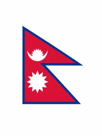
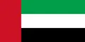
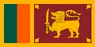
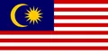
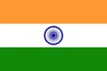
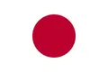
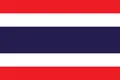

Dedicated to mastering karate, developing champions, inspiring the next generation, and advancing sports leadership.
I am Dhurba Bikram Malla, a Nepalese karate master, international referee, and coach with extensive experience in national and international martial arts competitions. Throughout my career, I have worked to promote karate, train future athletes, organize championships, and contribute to sports development in Nepal.
Balaju Karate-Do Academy, Nepal
Dan Diploma Holder
Dan Diploma Holder
Asian Karate Federation (AKF)
Kobe Osaka International (KOI-Nepal)
Asian Karate Federation (AKF)
Community Development Association
Rastriya Prajatantra Party
Participating as Official Referee & Judge across Asia, Middle East, and beyond

Nepal · 2019

Dubai, UAE · 2018

Colombo, Sri Lanka · 2017
Astana, Kazakhstan · 2017
Dashrath Stadium, Kathmandu, Nepal · 10-11 June 2017

Kuala Lumpur, Malaysia · 2-4 December 2016
Indonesia · 25-27 November 2016

Delhi, India · 23-25 September 2016

Yokohama, Japan · September 2015

Bangkok, Thailand · 26-30 July 2015
Kuala Lumpur, Malaysia · 2014
Dubai, UAE · 29 January - 2 February 2015
Lucknow, India · 26-29 October 2013
Hamdan Bin Mohammed Sports Complex, Dubai, UAE · 2013
Kuala Lumpur, Malaysia · 14-16 December 2012
Malaysia · 22 April 2012
UAE · 2-4 February 2012 · Referee Course at Al-Ahli Club
Selangor, Malaysia · 25-31 July 2011
Putrajaya, Malaysia · December 2011
Malaysia · 4-6 March 2011
Malaysia · 2011
Lucknow, India · 23-26 October 2010
Rajasthan, India · 20-22 August 2010
Singapore · 11 September 2010
Noida, India · 21-25 May 2008
Malaysia · 3-6 December 2009
New Delhi, India · 12 February 2006
Delhi, India · 2-3 January 2006
New Delhi, India · 28-30 November 1998
Tikapur, Nepal · 31 October - 2 November 1996 · Referee
Serving Karate in Nepal as Referee, Judge & Tournament Organizer
Kathmandu, Nepal · 15-21 April 2009 · Referee
Kathmandu, Nepal · 23-25 May 1998
Palpa, Nepal · 5-11 November 1996 · 2053 · Referee
Janakpur, Nepal · 17-19 August 1995 · Referee
National Sports Council · Kathmandu, Nepal · 1 October 2004
Bhaktapur, Nepal · 1 November 2013
Bagchaur Municipality, Tharmare, Salyan · 2075
Tournaments, seminars, and development programs organized in Nepal
28-29 May 2013 · Kathmandu, Nepal
27 May 2013 · Kathmandu, Nepal
20-22 September 2012
22-23 September 2012
14 April 2010
20-21 September 2008
11-13 January 2008
24-28 March 2007
Kathmandu · 14-15 October 2004
4-5 May 2002 · Hungary
9-11 January 2001
26 December 1998
30-31 November 1998
30-31 November 1997
9-10 May 1997
Get in touch for collaborations, events, or karate training inquiries
+977-9851061344
+977-9808465442
Balaju-16, Kathmandu, Nepal